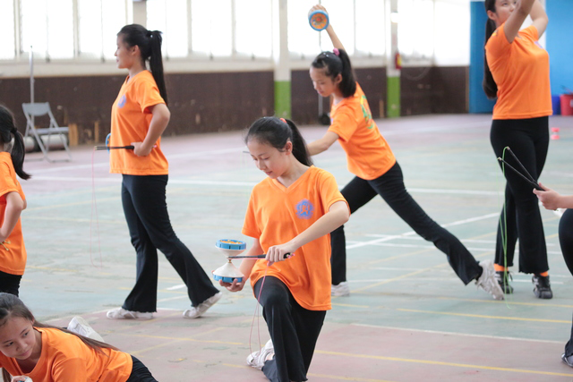
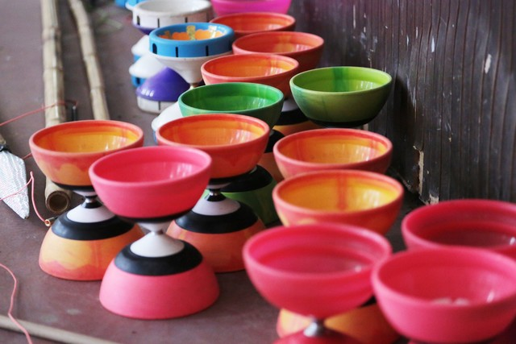
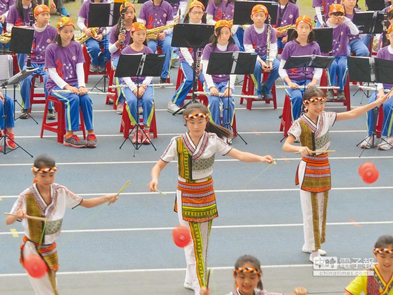

飛躍扯鈴 隊徽的由來
明道國小扯鈴隊成立近30周年，在麗秋主任細心與嚴格的教導，學員們不畏艱難勤奮練習，扯鈴隊榮獲佳績不可勝數。
麗秋主任秉持【飛躍傳統，鈴藝相承】的信念，將民俗技藝發揚光大，也希望藉由這樣的技能，讓孩子找到自信，增添生命的色彩，拓展國際視野，找到屬於自己的一片天。
創立之源
明道國小學區包含安康社區，全校約有七成學生出身於弱勢家庭，扯鈴隊更有九成學童來自低收入戶，一半以上的家庭是新住民或原住民，是全台北市弱勢孩童比率最高的國小。
扯鈴隊成立於民國76年10月，由吳麗秋主任指導，以照顧弱勢孩子為宗旨，提供孩子正當休閒活動，藉由扯鈴練習及各項活動，提升孩子的自信心並訓練孩子們的堅毅性格，期許孩子學得終生受用的專長發揮良能，追夢、圓夢、點燃生命的亮點。
30年來，在資金匱乏的困境中，麗秋主任藉由自己帶出來的扯鈴菁英薪火相傳，帶領孩子參加國內、外演出及競賽，照亮無數學童的生命路程，產生無數的明道扯鈴之星。許多孩子藉由競賽成果及獎金，讓自己取得優質的升學路，改善家庭經濟，甚至登上國際舞台。
- 
- 
擴展團隊
麗秋主任基於個人對傳統技藝的喜好，將扯鈴融入任教班級體育課程，初心是希望孩子們在課後有正當的娛樂。民國76年學校成立扯鈴社團，讓隊友們更能凝聚共識，畢業學員也時常「回娘家」加入團隊練習及義務指導。
團隊擴展後，許多小朋友從幼稚園就開始了「扯鈴人生」，每天接受嚴格的基本舞蹈及扯鈴技巧訓練，過程雖然辛苦，但也改變了他們的生活。麗秋主任用心經營社團，並積極為孩子尋找展現自我及競賽的機會，從競賽與表演的過程中，孩子們拾回自信、找到成就感，為自己找到人生的目標。
麗秋主任表示，在扯鈴隊中，隊員在年紀和經驗上各有不同，許多物品也需要大家共用，因此互相包容和體諒顯得格外重要。麗秋主任時常告知孩子：「大家相處在一起，這是個團體活動，要尊重團隊分工合群，不可太強調自我。」一直以來，扯鈴隊友都能齊心齊力，為共同的目標團結奮鬥。
扯遍天下
有別於一般花式扯鈴著重在技術，明道扯鈴隊將「故事」融入扯鈴表演，每個作品在技巧外都有獨到之處，結合技術、創意與藝術，讓明道成為扯鈴比賽常勝軍，曾代表國家遠赴白俄羅斯、美國、加拿大、日本韓國、中南美洲、澳洲等各國宣慰僑，並參與各種公益活動及國際文化交流活動。
麗秋主任說：「世界很大，但是他們一直在自己的小世界。」，透過扯鈴，讓這些孩子找到了自信，也找到一片新的天空，增添生命的色彩，拓展新的視野。30年來，麗秋主任親自帶領明道扯鈴隊，征戰國內外比賽。每天放學傍晚時刻，總有一群孩子留校練習。麗秋驕傲地笑說，自己帶出來的孩子都是扯鈴菁英。
高鳴袖是隊內老么，2015年12月首度參加國際賽，在馬來西亞拿下國小女生個人賽第3 名。鳴袖說：「自從幼稚園中班跟著哥哥玩扯鈴，上小學就加入扯鈴隊，扯鈴讓我有機會出國比賽，看見更多其他國家厲害的人。」
扯鈴隊資源並不如一般運動隊伍可獲得較多補助，必須靠著表演、比賽或義賣獲取經費。孩子們練習時的餐點及團隊出國經費，都要募集社會資源，任務艱困，麗秋主任時常告訴孩子：「總是要先做夢，做了夢才有目標去圓夢！」。
- 